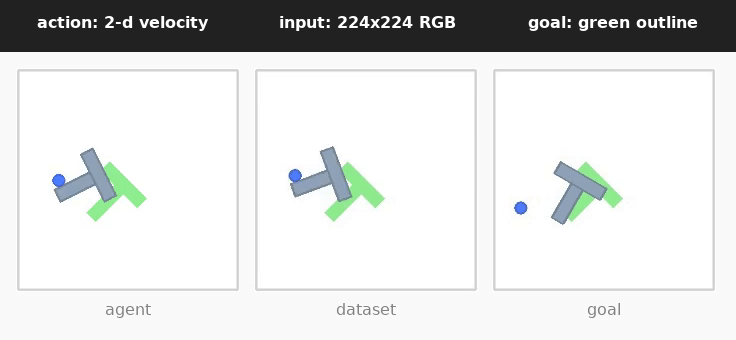

Push-T: the task before the model
TL;DR. Push-T is a 2D non-prehensile manipulation benchmark: a circular end-effector pushes a T-shaped block from a random starting pose to a fixed green target pose. Observations are 224×224 RGB; actions are 2-D push velocities; reward is sparse and triggered by overlap with the goal pose. Each evaluation seed draws 50 random start/goal pairs from a pool of roughly 1.87M expert-trajectory steps, so seed-to-seed variation reflects binomial sampling at n=50 — not model stochasticity.
The task in one paragraph
An agent (a small circular puck, the end-effector) lives in a 2D arena with a gray T-shaped block. A green outline marks the target pose. The agent has no gripper, no fingers, no suction — it can only nudge the block by making contact with it. The episode ends when the gray T sufficiently overlaps the green target, or when the 50-step budget runs out. Below: a full three-panel view of the task — agent on the left, an expert demonstration in the middle, the goal configuration on the right.

Observation, action, reward
| property | value |
|---|---|
| observation | RGB image, 3 × 224 × 224 |
| action | 2-D vector (x, y push velocity); action_block=5 chunks five actions per planner step |
| reward | sparse: success threshold on overlap (IoU) between the T-block and the goal pose |
| episode budget | 50 environment steps |
| dataset | quentinll/lewm-pusht — 18,685 expert demonstrations, ~2.3M steps |
Why Push-T is hard
Non-prehensile pushing means the T-block has its own rigid-body dynamics that nobody controls directly: when the end-effector contacts the T off-center, the block rotates in ways that depend on the exact contact geometry, the friction at the contact point, and the residual angular momentum already in the block. A small misalignment at one step compounds over several steps. The cleanest analogy is parallel parking with a T-shape, using only a circular bumper: you cannot grip, you cannot rotate the object directly, and any nudge that is even slightly off the block's center of mass induces a rotation you then have to plan around on the next push.
What counts as success
Success is overlap-based, not pose-based: the environment computes the intersection-
over-union (IoU) between the current gray T-block footprint and the green target
footprint, and declares the episode done when that overlap crosses a fixed
threshold and stays above it. Concretely: when the gray T overlaps the green target
sufficiently and stays there, the env returns done=True and the episode
counts as a success. There is no shaped reward and no partial credit — an
episode either crosses the threshold or it doesn't.
How evaluation is sampled
Each evaluation seed draws 50 random (start-pose, goal-pose) pairs from a pool of roughly 1.87 million points spanned by the 18,685 expert demonstrations. Different seeds draw different subsets of 50, so the spread in per-seed success rate that you will see on the Results page reflects binomial sampling noise at n=50 on top of any planner stochasticity. With 23 seeds × 50 episodes, our pooled denominator is 1,150 trials — large enough that the paper-vs-ours gap is far outside binomial sampling uncertainty.
What the model is asked to predict
One thing to flag before the next page: the model never produces an action directly. It is trained only to predict the next latent — a 192-d vector summary of the next observation, given the current latent and a candidate action. The planner (CEM-MPC) is what turns that predictor into a controller: it samples action sequences, rolls them out in latent space using the predictor, scores each by cost-to-goal, and refines toward the lowest-cost sequence. Only the first chunk of that sequence is executed in the real environment before replanning. See the World Model page for the architecture and the Planner page for the CEM-MPC loop.
Honesty note: throughout this site we avoid shorthand that attributes pushing behavior to the model. A more accurate statement is this: the model predicts latents which, when consumed by the planner, give rise to actions that push the T-block toward the goal. The model itself never sees a reward and never emits an action.
A first look at how it fails
Failures cluster into a small number of recognizable patterns (contact slip, oscillation, overshoot, and a handful of others). The bar chart below is a hand-labeled preview from n=6 episodes; a full taxonomy over the 180 failed episodes has not been done (see the Results page for that caveat).